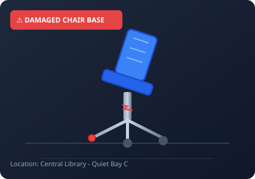
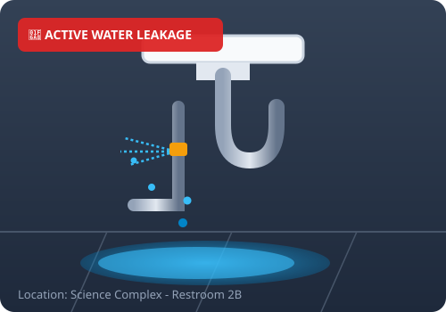
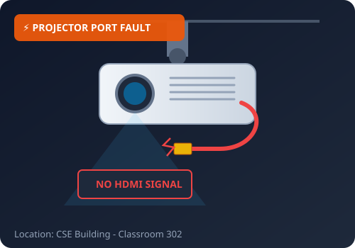

01
INSTANT SUBMISSION
Quick Equipment Picker & Duplicate Shield
Students select equipment in one click (Study Chairs, Water Pipes, Projectors, ACs, Wi-Fi, Lab PCs). Our intelligent duplicate shield checks building and room numbers to prevent duplicate work orders.
Try reporting a fault
One-Click Equipment Presets
Smart Input
02
TRANSPARENCY
Searchable Directory & Status Timelines
Track issues step-by-step with visual progress bars from initial submission to technician assignment and final sign-off. Students can view assigned staff and reopen tickets if faults persist.
Track your complaint
Live Audit Trail
Accountability
03
OPERATIONAL INTELLIGENCE
Technician Work Orders & Admin Analytics
Technicians access personalized work orders with repair notes and part requisition support, while administration monitors campus-wide uptime, recurring breakdown hotspots, and SLA turnaround benchmarks.
Explore live analytics
Staff & Admin Dashboards
Operations